HabitHero: personalising goals to make progress understandable
A research-led redesign of onboarding, daily guidance and weekly review.
Individual academic project · UX researcher and designer · October 2025–April 2026
I owned discovery, journey design, prototyping and usability testing. Delivered: a refined Figma prototype; longer-term habit formation remains unproven.
Discover
I investigated what people needed from fitness tracking.
The brief asked for better progress tracking. I interviewed people about how they tracked activity and what helped or discouraged them.
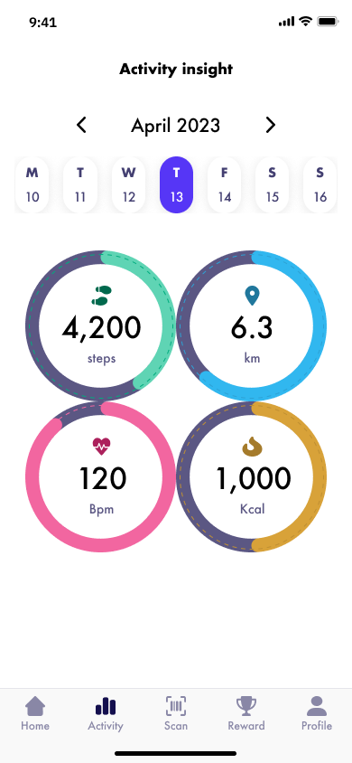
Which metrics matter?
When have I done enough?
Questions guiding discoverySee the starting problem
Starting point
Help people track activity and understand their progress towards a goal.
What the research changed
Help people choose a realistic starting goal, understand daily progress and restart after missed days.
I conducted five discovery interviews, then synthesised the findings into a persona, journey and design priorities.
Interviews showed that tracking could add pressure.
People described arbitrary targets, limited time and the pressure of tracking more information.
Research persona · synthesised from discovery
Ella, the time-poor parent
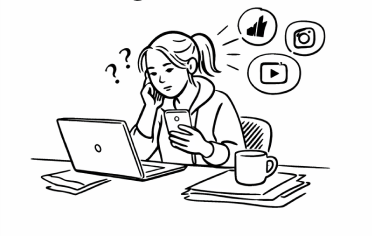
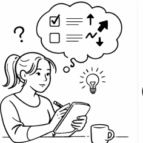
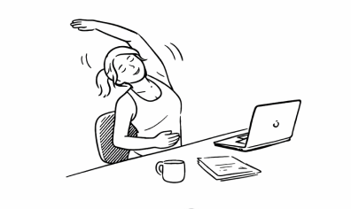
Making sense of conflicting information.
- Key pain
- Conflicting advice makes it hard to know what matters.
- Key motivation
- Clear guidance she can trust.
See what the interviews revealed
Pressure
“I'm not ready to track my sleep yet. It's another thing to get stressed about.”
Arbitrary targets
“At the moment, 10,000 steps a day is just some arbitrary number, but I still kind of go with that.”
Limited time
“I don't have five minutes to spare for anything. So my fitness mainly happens on weekdays when I'm at work.”
Excerpts from discovery interviews, reproduced in the discovery presentation script.
Pull right or tap to reveal.
- 5 of 5 interviews
- Decision cost and prioritisation; confusion about progression.
- 4 of 5 interviews
- Fragile motivation.
- 3 of 5 interviews
- Uncertainty about when an activity or goal was complete.
I concluded that progress feedback should explain what to do without adding pressure.
Define
I made goal setting the starting point for understanding progress.
A goal based on recent activity would give people a starting point for judging their progress.
Patterns across five discovery interviews
Make the next action understandable.
Counts describe these five interviews, not the wider population.
See how I set the design priorities
From findings to priorities
I used the persona and journey to bring the interview findings together, then compared opportunities by their expected impact and effort.
From priorities to scope
I focused on setting a starting goal, showing daily status, supporting restarts and reviewing the week. The starting goal gave the later feedback a reference point.
Follow a finding into the brief
Decision cost and prioritisation appeared across five discovery interviews.
Reduce cognitive load: make the next action understandable.
These priorities reflect my interpretation of the research. Their effect on behaviour was not measured.
How I compared opportunities
The assessment favoured showing when a day was complete and what to do next. I treated a personalised starting goal as the reference point for that feedback.
| Opportunity | Impact | Effort |
|---|---|---|
| Clear daily completion state | 5 | 2 |
| One suggested next action | 5 | 3 |
| Restart flow with a small goal | 4 | 2 |
| Default starter-goal bundle | 4 | 3 |
Opportunity names are shortened for readability. Ratings reproduce the original document; they are not measured product outcomes.
View the original assessmentWhat success would mean
Measure whether people accept the starter goal and complete setup, interpret their status correctly, and understand the weekly outcome. Longer-term evaluation would examine continued activity after goal adjustment.
Planned measures from the project’s goals–signals–metrics work, not achieved results.
What the design needed to do
- Make the next action understandable.
- Make completion clear.
- Support restarting without shame.
Cross-app aggregation was deprioritised. Redesigning the rewards system sat outside this scope, although testing later exposed its limitations.
Develop
I designed onboarding around a personalised, adjustable goal.
I compared three ways to accept or change a suggested goal, then explained the recommendation during onboarding.
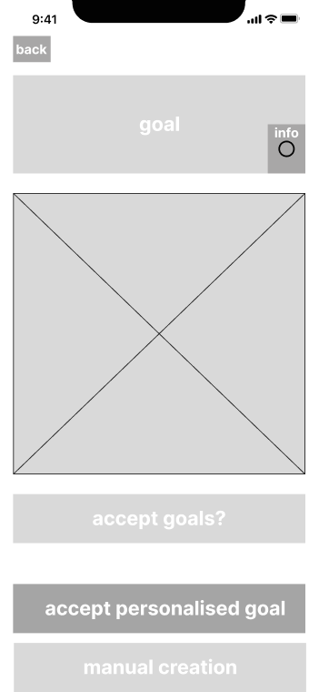
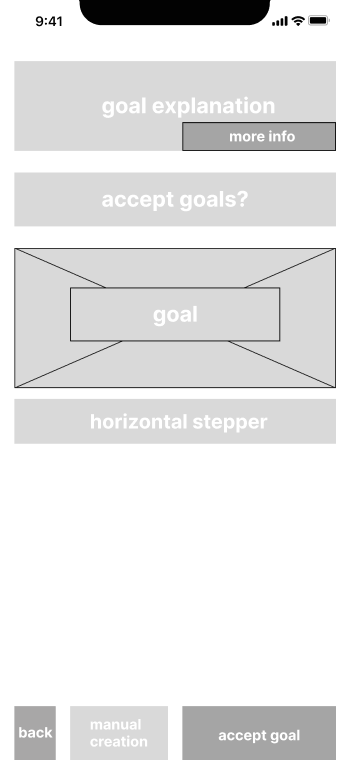
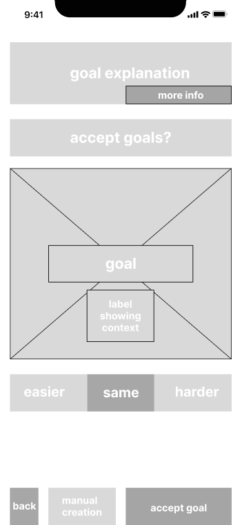
Compare the goal-setting optionsClose the goal-setting options
The research
All five discovery interviews raised difficulty interpreting progress and deciding what to do.
The design implication
Start with a credible goal. Explain it, and leave room to change it.
How could people change the recommendation?
Three explorations
Turn to compare, or choose a name.
Accept or create
The difference
A clear choice: accept the suggestion or start a manual goal.
The trade-off
Changing the recommendation means leaving this route.
Adjust in place
The difference
The explanation, goal and adjustment sit together.
The trade-off
The stepper must make the size of each change clear.
Easier / same / harder
The difference
Everyday labels offer a direction without asking for a number first.
The trade-off
The result of each choice still needs explaining.
The decision
I carried forward a suggested goal with an explanation and adjustment controls. Onboarding explained how recent activity informed the goal before people accepted or changed it.
The goal-setting design
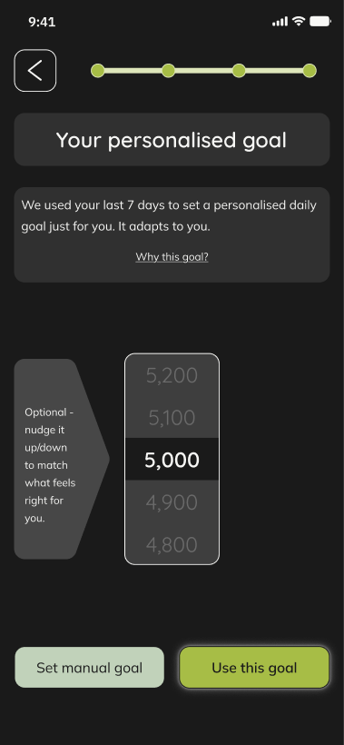
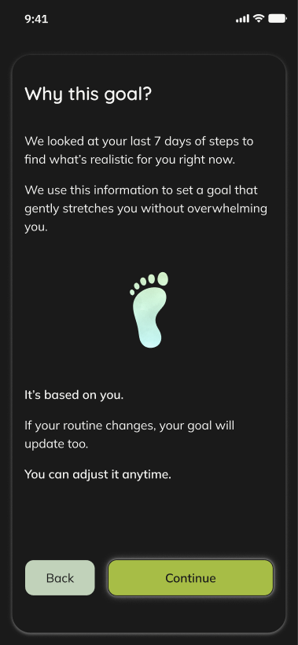
Final prototype screens. Suitability of the adaptive goal logic still needs specialist validation.
Original low-fidelity explorations. Captions explain the visible trade-offs retrospectively; no comparative test result is claimed.
I designed daily guidance and explained how weekly goals worked.
The dashboard shows daily status and remaining steps. The weekly review explains how active days count towards the goal.
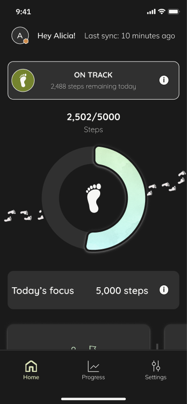
A clear daily status.
Remaining effort made visible.
See daily guidance and weekly review
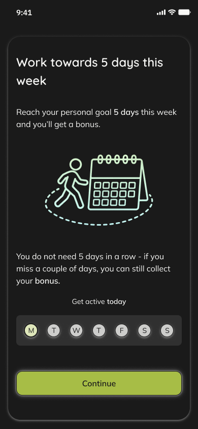
Daily guidance
The dashboard shows whether someone is on track and how many steps remain.
Weekly review
Review progress, explain the next goal and recognise activity without requiring five consecutive successful days.
I tested whether people understood these screens and found them useful. The sessions could not establish lasting changes in exercise habits.
Explore the final screens in FigmaI tested whether people understood the goals, feedback and controls.
Seven people tested goal setup, daily status, weekly rules and goal adjustment in moderated sessions.
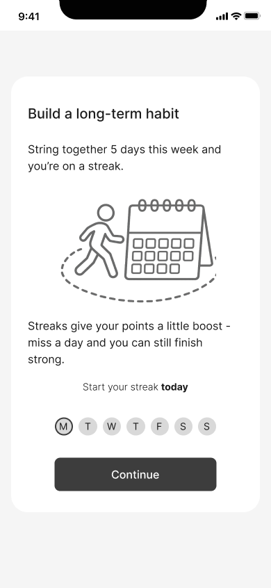
found the weekly criteria unclear.
Illustration of the issue found in testing.
See what testing revealed
What people found useful
Goals that adapt to recent activity received positive responses in six of seven sessions. Notifications and quick check-ins were useful for recovery across all seven.
What people misunderstood or needed to control
Five of seven sessions exposed confusion about how daily status was calculated. Four highlighted insufficient notification control. Six exposed unclear weekly-success criteria.
I tested comprehension and reactions to a prototype. These sessions did not establish improved retention or lasting exercise habits.
Outcome
I clarified the wording and controls, then delivered the final prototype.
I explained the weekly rule, added notification controls and documented the final screens for handover.
Delivered Figma prototype · behavioural impact not yet validated.
See the changes I delivered
Five active days, without a streak.
The weekly rule allowed two missed days. The word “streak” suggested otherwise.
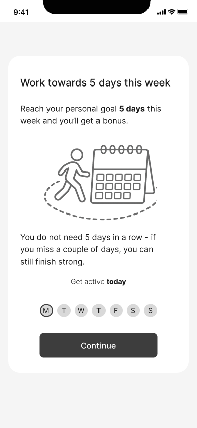
Tested version
“String together 5 days this week and you’re on a streak” mixed a consecutive-day term with a rule that allowed missed days.
The finding
Weekly success criteria were unclear in six of seven sessions.
The response
State the five-day rule directly and explain that the days need not be consecutive.
The revision is documented. Improved comprehension after this change has not been established.
Testing finding
Five of seven sessions revealed confusion about how daily status was calculated.
Design revision
Added explanations of active times during onboarding and routes to review those times.
The refinement record also documents larger radio-button hit areas, clearer goal-setting labels and more consistent primary buttons.
Still unresolved
Permissions remained outstanding. Retesting of the revised prototype has not been established. The next validation would check comprehension of the revised rules and controls before investigating longer-term behaviour.